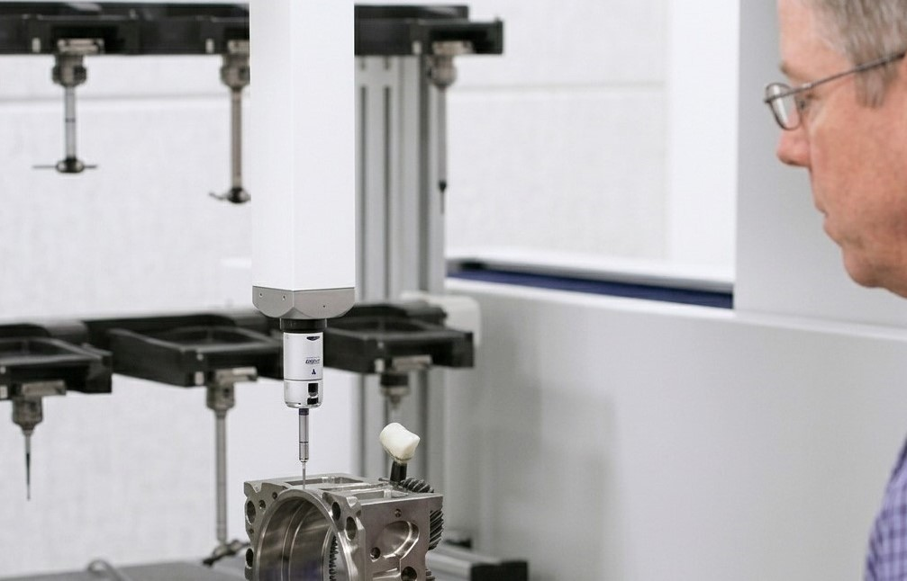
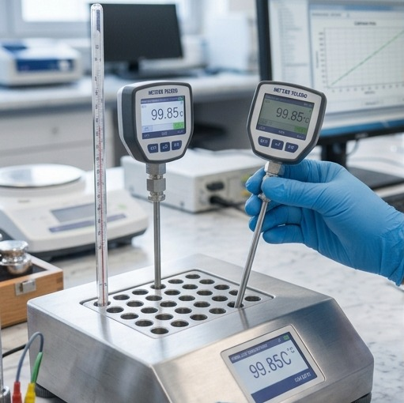
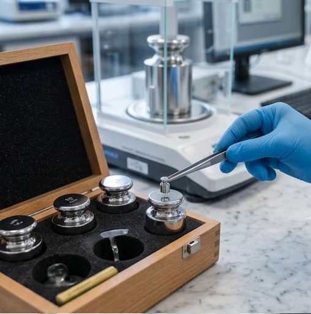
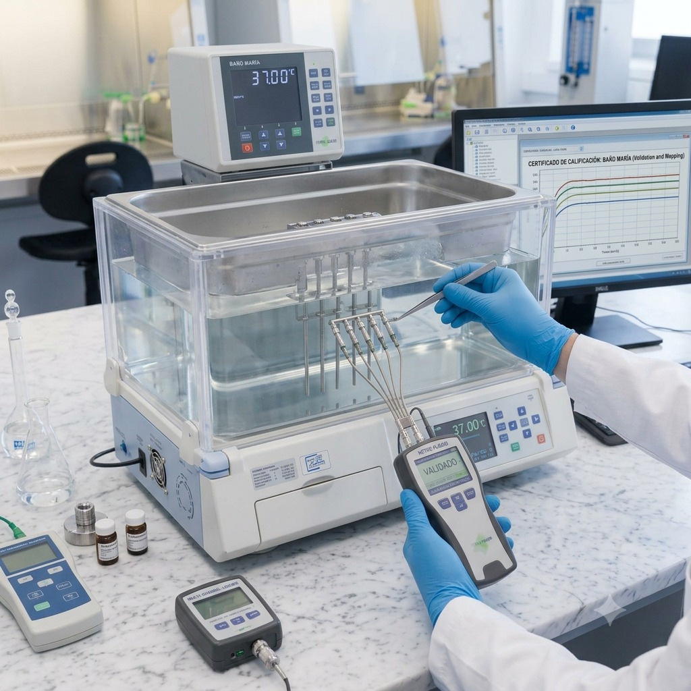
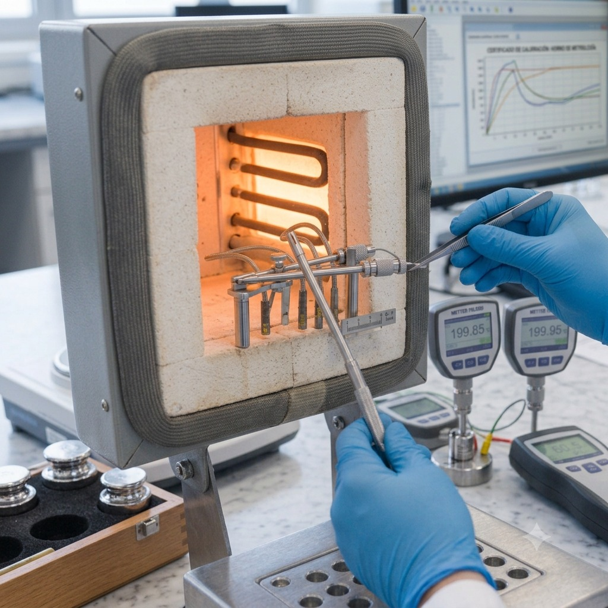
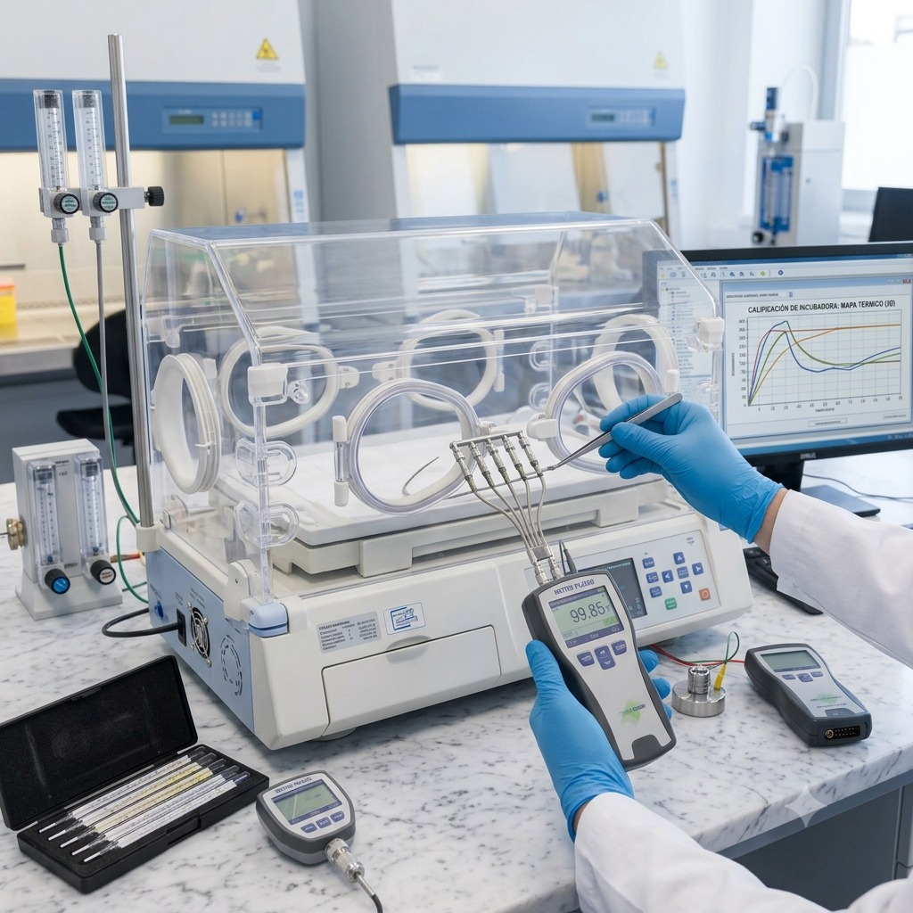
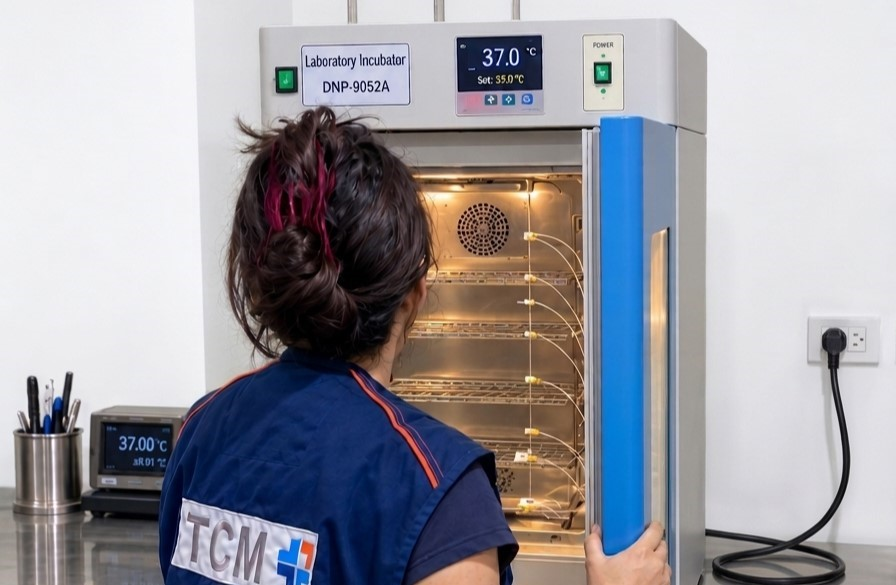
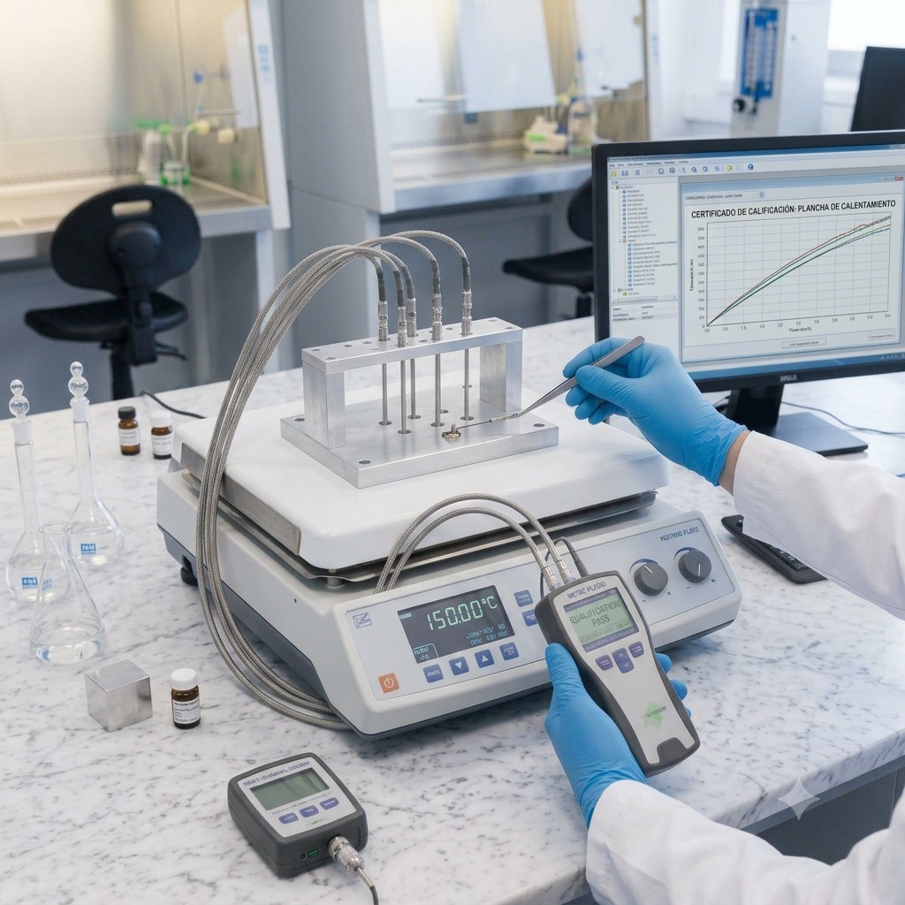

Nuestros servicios
Soluciones Especializadas para Laboratorio e Industria
Servicios metrológicos con trazabilidad, calificación de equipos bajo estándares internacionales, mantenimiento técnico y suministro de instrumental de alta precisión.

CalibraciónLaboratorio de Electricidad
Calibración de instrumentos de medición eléctrica con alta exactitud y patrones de referencia trazables.
Multímetros, óhmetros, amperímetros, telurómetros, megóhmetros, calibradores de proceso, fuentes de tensión, voltímetros, vatímetros e indicadores de temperatura.
 Calibración
Calibración
Laboratorio de Longitud
Calibración dimensional para asegurar tolerancias exactas en control de procesos y calidad.
Pie de rey, micrómetros de exterior e interior, reloj comparador, reglas, cintas métricas, escuadras y goniómetros.

CalibraciónLaboratorio de Fuerza y Presión
Determinación de error e incertidumbre en equipos sometidos a presión positiva, vacío y torque.
Torquímetros, dinamómetros, manómetros de deformación elástica de carátula, digitales, transductores de presión y manómetros diferenciales.

CalibraciónLaboratorio de Masa
Aseguramiento metrológico mediante pesas patrón certificadas para pesaje analítico e industrial.
Balanzas analíticas, balanzas de precisión, balanzas industriales, balanzas de humedad y pesas.
Laboratorio de Luminosidad y Sonido
Evaluación metrológica para equipos de monitoreo ambiental, ergonomía y seguridad industrial.
Luxómetros y sonómetros con patrones de referencia acústicos y ópticos certificados.

CalibraciónLaboratorio de Química
Calibración de instrumentos analíticos mediante materiales de referencia certificados.
Medidores de pH, medidores de conductividad y medidores de Oxígeno disuelto en agua.

CalibraciónLaboratorio de Temperatura
Determinación de errores e incertidumbre en sensores, termómetros y caracterización de equipos térmicos.
Termómetros de líquido en vidrio, termómetros de indicación analógica o digital, termómetros infrarrojos, termohigrómetros, higrómetros. Equipos de temperatura: autoclaves, baños termostáticos, estufas, incubadoras, congeladores, refrigeradoras y muflas.

CalibraciónLaboratorio de Volumen
Calibración gravimétrica de material volumétrico de vidrio y equipos de dosificación de laboratorio.
Material volumétrico de vidrio (buretas, fiolas, picnómetros, pipetas, probetas) y micropipetas.

ValidaciónCalificación de Equipos
Protocolos documentados y ensayos para verificar que el equipo opera según su uso previsto.
Pruebas de aceptación en fábrica (FAT), pruebas de aceptación en sitio (SAT), calificación de instalación (IQ), calificación de operación (OQ) y calificación de desempeño (PQ).
Calificación de Salas HVAC
Control integral de parámetros de áreas limpias e instalaciones con ambiente controlado.
Conteo de partículas, prueba de integridad de filtro, renovación del aire, caudales y presión diferencial.

Soporte TécnicoMantenimiento Preventivo y Correctivo
Servicio técnico programado y atención de contingencias para extender la vida útil de sus equipos.
Equipos de laboratorio o de líneas de producción industrial con diagnóstico y puesta a punto.
Verificación de Aire Comprimido
Monitoreo de calidad y pureza de líneas de aire para garantizar procesos libres de contaminación.
Verificación de presencia de partículas, agua y aceite en los puntos de aire comprimido.
Equipamiento
Venta de Instrumentos y Equipos
Comercialización y asesoría técnica en la adquisición de instrumentación para laboratorio o industria.
Venta de instrumentos y equipos de laboratorio o industriales con garantía de fábrica y soporte de calibración.